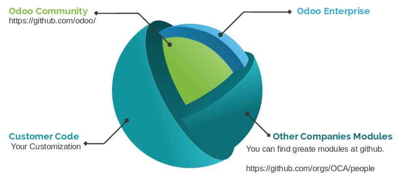

Odoo Developer Training¶
From Basis to First Module
{kind=link}
Luis Felipe Miléo¶
- Co-founder and CEO at KMEE;
- Odoo Consultant and Developer since 2010;
- PSC, team leader, of Brazilian Localization:
- Delegate member of Odoo Community Association;
- Computer Engineer;
- twitter @luisfelipemileo
- instagram.com/luisfelipemileo
- linkedin.com/in/luisfelipemileo
- github.com/mileo
- www.kmee.com.br
Note
- Fell free to contact me after the presentation at OCA discord channel. I will be very happy to clarify any remaining doubts.
Agenda¶
- Intro: Odoo + Odoo Community;
- Setup Project: Odoo and Docker Environment;
- Coding;
- Q&A session.
Intro: Odoo + Odoo Community¶
The Odoo¶
Odoo is an Open Source ERP + CRM:
- Great Framework to create Business APPs;
- Uses Python + Javascript + PostgreSQL;
- Source Code: https://github.com/odoo/odoo
- Technical Doc: https://www.odoo.com/documentation
- User Doc: https://www.odoo.com/documentation/user/
- User Training Videos: https://www.odoo.com/slides/all
- Great Community: OCA =D
Note
- TIP: A good developer must seek functional understanding. If you know a module that has functionality similar to the one you want to develop, you can get good ideas by reading it.
The Odoo Community Association¶
The Odoo Community Association, or OCA, is a nonprofit organization whose mission is to promote the widespread use of Odoo and to support the collaborative development of Odoo features.
- Website: https://odoo-community.org/
- Discord Channel: https://discord.gg/tNby4ku
- Mailing Lists: https://odoo-community.org/groups
- 3000+ Odoo Modules with high quality code:
- Search here: https://odoo-community.org/shop
- Find the code: https://github.com/oca
Warning
- OCA contributors use Twitter a lot! Find who they are here: https://github.com/orgs/OCA/people and follow them.
Odoo + OCA:¶
Docker environment¶
Docker environment¶
There are many ways to run Odoo, it’s important that you know how to deploy it manually too because if you have a problem with docker, you will really need to know the basics.
If you don’t know it very well, check the Odoo doc:
https://www.odoo.com/documentation/14.0/setup/install.html
https://www.odoo.com/documentation/14.0/setup/deploy.html
There are a lot of good docker implementations:
http://github.com/odoo/docker
https://github.com/acsone/odoo-bedrock
https://github.com/Tecnativa/doodba
https://github.com/camptocamp/docker-odoo-project
Camptocamp - Docker Odoo project¶
Main components:
- Docker project: https://github.com/camptocamp/docker-odoo-project
- Marabunta (Used to provide an easy way to create Updates for Odoo fast and run easily): https://github.com/camptocamp/marabunta
- Anthem (Help scripting Odoo instances for automated setup, upgrades, testing and more): https://github.com/camptocamp/anthem
Akretion - AK¶
The toolbelt for odoo: https://github.com/akretion/ak
Do a lot of thinks but, in this training we will gonna use it for only two:
- Download the addons
- Generate addons path
#Install with a normal user
python3 -m pip install git+https://github.com/akretion/ak --user
Before start¶
You will need to ensure a few things:
- Docker installed and running: https://docs.docker.com/get-docker/
- Docker Compose: https://docs.docker.com/compose/install/
- Python 3
- Python Pip https://pip.pypa.io/en/stable/installing/
- Install Akretion AK
Setup Odoo Environment¶
Setup Odoo Environment¶
We will start from a pre-configured repository. To know more about it you must study a little a about the camp2camp docker-odoo-project, docker itself and other used components like postgresql and traefik.
git clone https://github.com/kmee/oca-days-2020-odoo-developer-source.git --branch=template
cd oca-days-2020-odoo-developer-source
You will have the folder structure above:
|-- dev.docker-compose.yml
|── docker-compose.yml
|── odoo
|── data
|── dev_oca_days.egg-info
|── Dockerfile
|── external-src # Downloaded OCA repositories source code
|── links
|── local-src # Your customer modules
|── MANIFEST.in
|── migration.yml # Migration Scripts
|── repo.yaml
|── requirements.txt # Extra requirements for your project
|── setup.py
|── songs # Scripts with antherm
|── spec.yaml # Source Code specification: Where download Odoo and OCA repos.
|── src # Downloaded Odoo Source Code
|── VERSION
Setup the project¶
# Inside de project go to Odoo folder
cd oca-days-2020-odoo-developer-docs
cd odoo
# Run **ak build** to download the sources
ak build
# To know more about what this command is doing read the file spec.yml
#
# Go back to the main folder
cd ..
# Build the Odoo Docker
docker-compose build
# To know more about what this command is doing read the file odoo/Dockerfile
Running Odoo¶
# In the project's root folder
docker-compose up
# To stop press CTRL + C
Adding OCA projects / modules¶
Now that we have the Odoo up and running let’s add a new project to improve it.
- Go to https://odoo-community.org/shop and search for Responsive;
- Open the module web_responsive, from Tecnativa and LasLabs, go to the website(https://github.com/OCA/web)
- Copy the link.
- Edit spec.yml
odoo:
modules: []
src: https://github.com/odoo/odoo 13.0
web:
modules: []
src: https://github.com/OCA/web 13.0
When ak build has finished running it displays new addons path that you can must put in your docker-compose file
ak build
[...]
(INFO) [07:21:45] git_aggregator.repo src End aggregation of /home/mileo/Projects/oca-days-2020/oca-days-2020-odoo-developer-source/odoo/src
Addons path for your config file: /odoo/links,/odoo/local-src,/odoo/src/odoo/addons,/odoo/src/addons,/odoo/external-src/web
TIP: This will add all the modules of the project OCA/web, if you just want the web_responsive you can use the following syntax:
odoo:
modules: []
src: https://github.com/odoo/odoo 13.0
web:
modules: ['web_responsive']
src: https://github.com/OCA/web 13.0
Edit your docker compose to update the ADDONS_PATH
services:
odoo:
environment:
- PYTHONDONTWRITEBYTECODE=True
- LOCAL_USER_ID=$UID
- RUNNING_ENV=$ENV
- MARABUNTA_MODE=demo
- DB_HOST=$PGHOST
- DB_NAME=$PGDATABASE
- DB_USER=$PGUSER
- DB_PASS=$PGPASSWORD
- PGHOST=$PGHOST
- PGDATABASE=$PGDATABASE
- PGUSER=$PGUSER
- PGPASSWORD=$PGPASSWORD
- ADDONS_PATH=/odoo/links,/odoo/local-src,/odoo/src/odoo/addons,/odoo/src/addons,/odoo/external-src/web
hostname: ${ENV}-${COMPOSE_PROJECT_NAME}
labels:
docky.main.service: true
docky.user: odoo
volumes:
- ./odoo:/odoo
- ./data/addons:/data/odoo/addons
- ./data/filestore:/data/odoo/filestore
- ./data/sessions:/data/odoo/sessions
version: '3.7'
Lets auto install web_responsive with a migration script, edit you PROJECT_ROOT/odoo/migration.yml
migration:
options:
install_command: odoo
versions:
- version: 13.0.0.0.0
operations:
pre:
- "sh -c 'psql -c \"CREATE EXTENSION pg_trgm;\"'"
post:
- anthem songs.install.base::main
addons:
upgrade:
- contacts
modes:
demo:
operations:
post:
- anthem songs.install.demo::main
- version: 13.0.0.0.1
addons:
- web_responsive
Coding our first module¶
Coding our first module¶
In our example module we will create an application for customer service management: with Kanban and personalized workflow, integration with email and sms.
To help us we will use the https://github.com/acsone/bobtemplates.odoo install it in your local user:
pip install bobtemplates.odoo
Create your module skeletton¶
Run bob the command inside de folder local-src and answer the questions:
cd PROJECT_ROOT/odoo/local-src
mrbob bobtemplates.odoo:addon
Welcome to mr.bob interactive mode. Before we generate directory structure,
some questions need to be answered.
Answer with a question mark to display help.
Values in square brackets at the end of the questions show the
default value if there is no answer.
--> Addon name (with underscores): customer_service
--> Is it an OCA addon [n]:
--> Summary: ACME Customer Service
--> Version [12.0.1.0.0]: 13.0.1.0.0
--> Copyright holder name: KMEE
--> Copyright year: 2020
--> Website: www.kmee.com.br
Generated file structure at PROJECT_ROOT/odoo/local-src
You will have the following file structure:
|── customer_service
│ |── __init__.py # All Odoo modules are python modules
│ |── __manifest__.py # Module manifest: Here you will have the name, dependencies, authors and etc
|── README.md # Description of the module, as displayed on github or OCA website.
Add our module to the migration file, in a new version.
[...]
- version: 13.0.0.0.1
addons:
- web_responsive
- version: 13.0.0.0.2
addons:
- customer_service
Run Odoo an check that our module ir already installed.
TIP: When you are starting developing, the best way to go further is with little baby steps.
Adding a new Business Model to our module¶
A model will represent the Business process, the data that you want to store and behaviors of the data you’re storing.
The basics:
- Each model is a Python class that subclasses odoo.models.Model.
- Each model is generally maps to a single database table.
- Each attribute of the model represents a database field.
- With all of this, Django gives you an automatically-generated database-access API; see Making queries.
For example a CRM LEAD of Odoo Core crm module:
class Lead(models.Model):
_name = "crm.lead"
_description = "Lead/Opportunity"
#[...]
name = fields.Char('Opportunity', required=True, index=True)
partner_id = fields.Many2one('res.partner', string='Customer',
help="Linked partner (optional). Usually created when converting the lead. You can find a partner by its Name, TIN, Email or Internal Reference.")
active = fields.Boolean('Active', default=True)
email_from = fields.Char('Email', help="Email address of the contact")
description = fields.Text('Notes')
#[...]
With the help o bob.odoo we will create our first Odoo model with accompanying form, tree, action, menu, demo data and ACL
cd customer_service # Go inside de module folder that you want to create the model
mrbob bobtemplates.odoo:model
Welcome to mr.bob interactive mode. Before we generate directory structure, some questions
need to be answered. Answer with a question mark to display help. Values in square
brackets at the end of the questions show the default value if there is no answer.
--> Odoo version (8|9|10|11|12) [12]: 13
--> Model name (dotted notation): customer.service.ticket
--> Inherit [y]: n
--> Form view [y]: y
--> Search view [y]: y
--> Tree view [y]: y
--> Action and menu entry [y]: y
--> ACL [y]: y
--> Demo data [y]: y
--> Copyright holder name: KMEE
--> Copyright year: 2020
Generated file structure at PROJECT_ROOT/odoo/local-src/customer_service
You will have the following file structure:
|── customer_service
│ |── demo
│ │ |── customer_service_ticket.xml
│ |── __init__.py # Updated with the model import
│ |── __manifest__.py # Update with the imports of demo/security and views.
│ |── models
│ │ |── customer_service_ticket.py # Your module definition.
│ │ |── __init__.py
│ |── security
│ │ |── customer_service_ticket.xml # User access rules
│ |── views
│ |── customer_service_ticket.xml # Our views: tree, form, search, kanban.
|── README.md
Before install it we need to fix some settings:
- Create a main menu
- Relate customer service menu with main menu
- Ensure create / write / delete user access rules
To create a main menu we need a icon, for that we will use a standard item, download from Odoo webiste: https://www.odoo.com/pt_BR/page/brand-assets
Create a folder struct inside the module and save it: odoo/local-src/customer_service/static/description/icon.png
Inside de folder views, create a new file: customer_service/views/customer_service_menu.xml
<?xml version="1.0" encoding="utf-8"?>
<odoo>
<record model="ir.ui.menu" id="customer_service_main_menu">
<field name="name">Customer Service</field>
<field name="sequence" eval="40"/>
<field name="web_icon">customer_service,static/description/icon.png</field>
</record>
</odoo>
Edit the module manifest to import the main menu:
{
'name': 'Customer Service',
'description': """
ACME Customer Service""",
'version': '13.0.1.0.0',
'license': 'AGPL-3',
'author': 'KMEE',
'website': 'www.kmee.com.br',
'depends': [
],
'data': [
'security/customer_service_ticket.xml',
'views/customer_service_menu.xml',
'views/customer_service_ticket.xml',
],
'demo': [
'demo/customer_service_ticket.xml',
],
}
Ensure that you put it before the customer_service_ticket, the order matters.
Let’s relate the service ticket menu with our new main menu, open the file: odoo/local-src/customer_service/views/customer_service_ticket.xml and edit the last section:
[...]
<record model="ir.ui.menu" id="customer_service_ticket_menu">
<field name="name">Customer Service Ticket</field>
<field name="parent_id" ref="customer_service_main_menu"/> <!-- The id of the main menu -->
<field name="action" ref="customer_service_ticket_act_window"/>
<field name="sequence" eval="16"/>
</record>
Edit odoo/local-src/customer_service/security/customer_service_ticket.xml changing all the permissions to ONE
<?xml version="1.0" encoding="utf-8"?>
<odoo>
<record model="ir.model.access" id="customer_service_ticket_access_name"> <!-- TODO acl id -->
<field name="name">customer.service.ticket access name</field> <!-- TODO acl name -->
<field name="model_id" ref="model_customer_service_ticket"/>
<!-- TODO review and adapt -->
<field name="group_id" ref="base.group_user"/>
<field name="perm_read" eval="1"/>
<field name="perm_create" eval="1"/>
<field name="perm_write" eval="1"/>
<field name="perm_unlink" eval="1"/>
</record>
</odoo>
Updating your Odoo module manually¶
If yout docker-composed is already running stop it. And run it with the folllowing parameters:
docker-compose run --rm -e DB_NAME=dev-oca-days odoo odoo -u customer_service --stop-after-init
# This command will run Odoo, update the module customer_service,
# installed on the database dev-oca-days and when finished will stop the Odoo.
# Start Odoo again as normally
docker-compose up
Adding fields to our model¶
At this moment you must we have a basic module, that we can install, save and edit data. With a tree view and a form view. But we need more, let’s edit odoo/local-src/customer_service/models/customer_service_ticket.py and add some fields.
from odoo import api, fields, models, _
class CustomerServiceTicket(models.Model):
_name = 'customer.service.ticket'
_description = 'Customer Service Ticket' # TODO
name = fields.Char()
description = fields.Html(sanitize_style=True)
user_id = fields.Many2one('res.users')
partner_id = fields.Many2one('res.partner')
partner_email = fields.Char(related='partner_id.email')
We need to add this new fields to the view, check your odoo/local-src/customer_service/views/customer_service_ticket.xml, you will see that are five blocks of code:
- Form view;
- Search / Filter View (Add Filter, Group and Favorites search);
- Tree / List view;
- Action (Speaking in a very simple way links the menu with the views);
- Menu;
Add the all the new fields to the form view:
<record model="ir.ui.view" id="customer_service_ticket_form_view">
<field name="name">customer.service.ticket.form (in customer_service)</field>
<field name="model">customer.service.ticket</field>
<field name="arch" type="xml">
<form>
<header>
</header>
<sheet>
<group>
<field name="name"/>
<field name="description"/>
<field name="user_id"/>
<field name="partner_id"/>
<field name="partner_email"/>
</group>
</sheet>
<div class="oe_chatter"></div>
</form>
</field>
</record>
Add the some fields to the tree view:
<record model="ir.ui.view" id="customer_service_ticket_tree_view">
<field name="name">customer.service.ticket.tree (in customer_service)</field>
<field name="model">customer.service.ticket</field>
<field name="arch" type="xml">
<tree>
<field name="name"/>
<field name="user_id"/>
<field name="partner_id"/>
</tree>
</field>
</record>
Add a Kanban / Workflow¶
To quick add a Kanban without coding a lot we will use a very nice OCA module: base_kanban_stage
In the moment of this talk the module isn’t migrated wet to version 13.0, then we will use a pull request instead of the main branch. This is a good way to review other contributors work. Just be careful if you will gonna use it for production enviroment.
https://github.com/OCA/server-tools/pull/1799
Lets add it to spec.yaml:
odoo:
modules: []
src: https://github.com/odoo/odoo 13.0
web:
modules: []
src: https://github.com/OCA/web 13.0
kmee-server-tools:
modules: ['base_kanban_stage']
src: https://github.com/kmee/server-tools 13.0-mig-base_kanban_stage
Add base_kanban_stage to our module dependencies¶
The first step is to add base_kanban_stage to our module dependencies list. To do that we need to change the module manifest, by editing the odoo/local-src/customer_service/__manifest__.py
{
'name': 'Customer Service',
'description': """
ACME Customer Service""",
'version': '13.0.1.0.0',
'license': 'AGPL-3',
'author': 'KMEE',
'website': 'www.kmee.com.br',
'depends': [
'base_kanban_stage_state',
],
'data': [
'security/customer_service_ticket.xml',
'views/customer_service_menu.xml',
'views/customer_service_ticket.xml',
],
'demo': [
'demo/customer_service_ticket.xml',
],
}
Inherit base.kanban.abstract in our model¶
- Inherit from
base.kanban.abstractto add Kanban stage functionality to - the customer.service.ticket:
class CustomerServiceTicket(models.Model):
_name = 'customer.service.ticket'
_inherit = 'base.kanban.abstract'
By doing that we add all the functionalists of the model ‘base.kanban.abstract’ in our model.
Add a new view record at customer_service_ticket.xml and the kanban to the view_mode
<record id="customer_service_ticket_kanban_view" model="ir.ui.view">
<field name="name">customer.service.ticket.kanban (in customer_service)</field>
<field name="model">customer.service.ticket</field>
<field name="mode">primary</field>
<field name="inherit_id" ref="base_kanban_stage.base_kanban_abstract_view_kanban"/>
<field name="arch" type="xml">
<xpath expr="//div[@name='card_body']">
<field name="partner_id"/>
</xpath>
</field>
</record>
<record model="ir.actions.act_window" id="customer_service_ticket_act_window">
<field name="name">Customer Service Ticket</field> <!-- TODO -->
<field name="res_model">customer.service.ticket</field>
<field name="view_mode">kanban,tree,form</field>
<field name="domain">[]</field>
<field name="context">{}</field>
</record>
We need to change the form view too, to add the field stage_id to the header:
<record model="ir.ui.view" id="customer_service_ticket_form_view">
<field name="name">customer.service.ticket.form (in customer_service)</field>
<field name="model">customer.service.ticket</field>
<field name="arch" type="xml">
<form>
<header>
<field name="stage_id" widget="statusbar"/>
</header>
<sheet>
<group>
<field name="name"/>
<field name="description"/>
<field name="user_id"/>
<field name="partner_id"/>
<field name="partner_email"/>
</group>
</sheet>
<div class="oe_chatter"></div>
</form>
</field>
</record>
Add Email features¶
To add email features to our model, first we need to:
- Add mail module to our module dependencies;
- Add mail.thread to the inherit list of your model, same as we did with base.kanban.abstract
- Improve the view to display the email fields;
- Add dependence:
{
'name': 'Customer Service',
'description': """
ACME Customer Service""",
'version': '13.0.1.0.0',
'license': 'AGPL-3',
'author': 'KMEE',
'website': 'www.kmee.com.br',
'depends': [
'base_kanban_stage',
'mail,
],
'data': [
'security/customer_service_ticket.xml',
'views/customer_service_menu.xml',
'views/customer_service_ticket.xml',
],
'demo': [
'demo/customer_service_ticket.xml',
],
}
- Add mail.thread to the inherit list of your model:
class CustomerServiceTicket(models.Model):
_name = 'customer.service.ticket'
_inherit = ['base.kanban.abstract', 'mail.thread']
- Improve the view;
<record model="ir.ui.view" id="customer_service_ticket_form_view">
<field name="name">customer.service.ticket.form (in customer_service)</field>
<field name="model">customer.service.ticket</field>
<field name="arch" type="xml">
<form>
<header>
<field name="stage_id" widget="statusbar"/>
</header>
<sheet>
<group>
<field name="name"/>
<field name="description"/>
<field name="user_id"/>
<field name="partner_id"/>
<field name="partner_email"/>
</group>
</sheet>
<div class="oe_chatter">
<field name="message_follower_ids" widget="mail_followers" groups="base.group_user"/>
<field name="message_ids" widget="mail_thread"/>
</div>
</form>
</field>
</record>
Sending SMS¶
Odoo and Odoo SA has his own provider to send SMS, but we will override this behavior to send SMS with the provider of our choice.
To do that we will create a new module called sms_nexmo and we will propose it to OCA.
Here is an example of how to send SMS via nexmo:
from nexmo import Client
from nexmo.sms import Sms
sms = Sms(Client(key='60e5d109', secret='************NMX'))
sms.send_message({
'from': 'Vonage APIs',
'to': '5535988763663',
'text': 'Hello from Vonage SMS API',
})
Odoo SA has a module sms which has two methods that we need to override, here is the Odoo SA code:
class SmsApi(models.AbstractModel):
_name = 'sms.api'
_description = 'SMS API'
@api.model
def _contact_iap(self, local_endpoint, params):
account = self.env['iap.account'].get('sms')
params['account_token'] = account.account_token
endpoint = self.env['ir.config_parameter'].sudo().get_param('sms.endpoint', DEFAULT_ENDPOINT)
return iap.jsonrpc(endpoint + local_endpoint, params=params)
@api.model
def _send_sms(self, numbers, message):
params = {'numbers': numbers, 'message': message}
return self._contact_iap('/iap/message_send', params)
@api.model
def _send_sms_batch(self, messages):
params = {'messages': messages}
return self._contact_iap('/iap/sms/1/send', params)
Creating a module to be sent to OCA¶
This time we will not create the module sms_nexmo at local-src folder. We will create and send a pull request at OCA project: https://github.com/OCA/connector-telephony
But to To do that, we need to ensure a feel things:
- Ensure that
- A fork of this project.
- Add our fork to spec.yml
- Start coding
- Make a pull request
Adding a Forking a project¶
Go to the project, find the fork button on the upper right side of the screen. Fork it to your user/organization, and add your remote fork url to spec.yml
odoo:
modules: []
src: https://github.com/odoo/odoo 13.0
web:
modules: []
src: https://github.com/OCA/web 13.0
kmee-server-tools:
modules: ['base_kanban_stage']
src: https://github.com/kmee/server-tools 13.0-mig-base_kanban_stage
connector-telephony:
modules: []
src: https://github.com/YOUR_REMOTE_HERE/connector-telephony 13.0
Run ak build and update the addons path
Easy creating a OCA module with bobtemplates.odoo¶
cd PROJECT_ROOT/odoo/external-src/connector-telephony
mrbob bobtemplates.odoo:addon
Welcome to mr.bob interactive mode. Before we generate directory structure,
some questions need to be answered.
Answer with a question mark to display help.
Values in square brackets at the end of the questions show the
default value if there is no answer.
--> Addon name (with underscores): sms_nexmo
--> Is it an OCA addon [n]: Y
--> Summary: Send SMS with Nexmo instead of Odoo SA IAP.
--> Version [12.0.1.0.0]: 13.0.1.0.0
--> Copyright holder name: KMEE
--> Copyright year: 2020
--> Website: https://github.com/OCA/connector-telephony
You module sms_nexmo must depend of Odoo SA sms module:
{
'name': 'Sms Nexmo',
'summary': """
Send SMS with Nexmo instead of Odoo SA IAP.""",
'version': '13.0.1.0.0',
'license': 'AGPL-3',
'author': 'KMEE,Odoo Community Association (OCA)',
'website': 'https://github.com/OCA/connector-telephony',
'depends': [
'sms',
],
'data': [
'views/iap_account.xml',
],
'demo': [
],
}
Extending Odoo models¶
We will need to change the behavior of two Odoo models:
- iap.account: To save the nexmo key and secret;
- sms.api: To overwrite the methods: _send_sms and _send_sms_batch
Extending Odoo models: iap.account¶
We need to create two new fields at the model iap.account and add it to the form screen.
cd PROJECT_ROOT/odoo/external-src/connector-telephony/sms_nexmo
mrbob bobtemplates.odoo:model
Welcome to mr.bob interactive mode. Before we generate directory structure,
some questions need to be answered. Answer with a question mark to display help.
Values in square brackets at the end of the questions show the
default value if there is no answer.
--> Odoo version (8|9|10|11|12) [12]: 13
--> Model name (dotted notation): iap.account
--> Inherit [y]: Y
--> Form view [y]: Y
--> Search view [y]: n
--> Tree view [y]: n
--> Action and menu entry [y]: n
--> ACL [y]: n
--> Demo data [y]: n
--> Copyright holder name: KMEE
--> Copyright year: 2020
Adding the two fields to the model is very easy, edit the file: PROJECT_ROOT/odoo/external-src/connector-telephony/sms_nexmo/models/iap_account.py
from odoo import api, fields, models, _
class IapAccount(models.Model):
_inherit = 'iap.account'
key = fields.Char()
secret = fields.Char()
To add them to form view, the easy way is to find the view and at developer mode click on View Form View to discover the external id of the main view.
Only with the external id in hand can we edit the inherited view.
<record model="ir.ui.view" id="iap_account_form_view">
<field name="name">iap.account.form (in sms_nexmo)</field>
<field name="model">iap.account</field>
<field name="inherit_id" ref="iap.iap_account_view_form"/>
<field name="arch" type="xml">
<field name="account_token" position="after">
<field name="key"/>
<field name="secret"/>
</field>
</field>
</record>
TIP: Always remember to use the complete name: <MODULE><DOT><RECORD_ID>
Overwriting Odoo model: sms.api¶
cd PROJECT_ROOT/odoo/external-src/connector-telephony/sms_nexmo
mrbob bobtemplates.odoo:model
Welcome to mr.bob interactive mode. Before we generate directory structure,
some questions need to be answered. Answer with a question mark to display help.
Values in square brackets at the end of the questions show the
default value if there is no answer.
--> Odoo version (8|9|10|11|12) [12]: 13
--> Model name (dotted notation): sms.api
--> Inherit [y]: Y
--> Form view [y]: n
--> Search view [y]: n
--> Tree view [y]: n
--> Action and menu entry [y]: n
--> ACL [y]: n
--> Demo data [y]: n
--> Copyright holder name: KMEE
--> Copyright year: 2020
To send sms we will need an external library: https://pypi.org/project/nexmo/
We must also not forget to add it to requirements.txt and run the build command again.
odoo/requirements.txt
And from the PROJECT_ROOT
Now we can use it on our python class:
from odoo import api, fields, models, _
from nexmo import Client
from nexmo.sms import Sms
class SmsApi(models.AbstractModel):
_inherit = 'sms.api'
def _send_sms_nexmo(self, sms, params):
sms.send_message(params)
@api.model
def _send_sms(self, numbers, message):
account = self.env['iap.account'].get('nexmo.sms')
if not account:
return super(SmsApi, self)._send_sms(numbers, message)
sms = Sms(Client(key=account.key, secret=account.secret))
self._send_sms_nexmo(sms, {
'from': 'Odoo',
'to': numbers,
'text': message,
})
@api.model
def _send_sms_batch(self, messages):
account = self.env['iap.account'].get('nexmo.sms')
if not account:
return super(SmsApi, self)._send_sms_batch(messages)
sms = Sms(Client(key=account.key, secret=account.secret))
for record in messages:
record._send_sms_nexmo(sms, {
'from': 'Odoo',
'to': record['number'],
'text': record['content'],
})
Integrate Customer Service with SMS¶
Before getting your hands dirty and integrating our module with sms it is important that you understand some things.
- When we changed the definition of our model so that it inherited from mail.thread. We made him acquire all the functionality of the email module.
class CustomerServiceTicket(models.Model):
_name = 'customer.service.ticket'
_inherit = ['base.kanban.abstract', 'mail.thread']
- When installing the Odoo SA sms module we added new features to the mail.thread model, making Odoo records able to communicate via sms as well.
- When we create a module sms_nexmo we change de default behavior of sending sms via Odoo SA IAP to send it via Nexmo.
Send customer service number by SMS¶
We will create a button to allow user to send ticket number to the partner by sms.
_message_sms